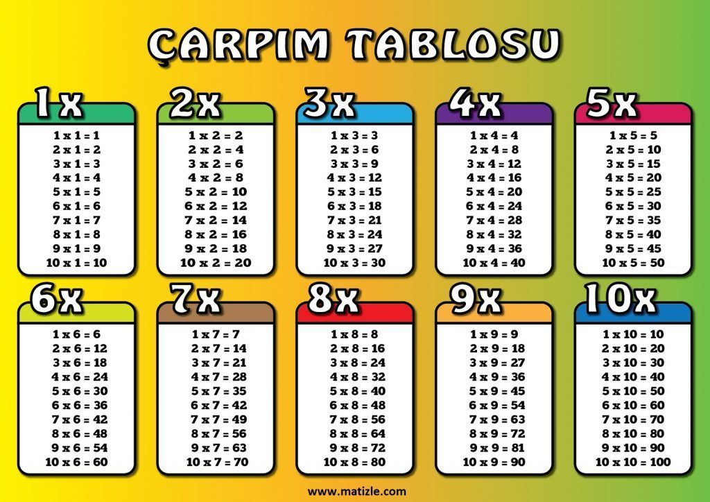

Matematik içerisinde eldeli ya da eldesiz şekilde birçok farklı çarpma işlemi yapabiliriz. Ancak şimdi öncelikle çarpma işlemi nasıl gerçekleştireceğiz onu öğrenelim ve sonra diğer işlemleri yapalım.
Çarpma işlemi sayıların katları olarak bilinmektedir. Şimdi bunu bir örnekle inceleyelim ve anlamaya çalışalım.
ÖRNEK: Ali'nin evi 1 katlıdır ve evinin 4 penceresi bulunmaktadır.Gökçe'nin evi 5 katıdır ve evin arkasında 4 penceresi bulunmaktadır.
CEVAP: 4 + 4 + 4 + 4 + 4 = 20 pencere
4’ün 5 katı 20’dir. Ya da 5 tane 4 = 30’dir. Ya da 5 kere 4 = 20’dir. 5 x 4 = 20
Gördüğümüz gibi Gökçe'nin evinin 20 tane penceresi olduğunu hesapladık. Yani Gökçe’nin evinin pencere sayısı Ali'nin evinin pencere sayısına göre 5 kat fazladır.
Bu şekilde çarpma işlemi gerçekleştirebilir ve hesaplama yapabilirsiniz. Şimdi bu konuda birkaç örnek daha yapalım ve çarpma işlemini anlamaya çalışalım..
Elde bulunmadan çarpma işlemi yaparak doğrudan sonucu elde edebiliriz. Şimdi eldesiz çarpma işlemi nasıl yapacağız bir örnekle bunu anlamaya çalışalım.
12 * 4 = 48 (4 x 2 = 8 birlik) (4 x 1 = 4 onluk)
Gördüğümüz gibi yukarıda öncelikle 4 ile 2’yi birler basamağı üzerinden çarptık. Böylece 8 rakamını bulduk ve alt kısma yazdık. Hemen arkasından ikinci işlemde ise bu defa 4 ile 1'i çarptık. Ve sonuç olarak 4 onluk rakamını bulduk. Ardından 4 ile 8 rakamını bir araya getirdik ve 48 sonucunu bulduk.
Eldeli çarpma işlemi biraz daha değişiktir. Şimdi bu çarpma işlemini nasıl yapacağımızı öğreneceğiz ve bir örnek ile beraber inceleyeceğiz.
26 * 2 = 52 (2 x 6 = 12 birlik) (2 x 2 = 4 onluk)
12 birlik = 1 onluk + 2 birlik olduğu için (2 x 6 = 1 onluk + 2 birlik) (2 x 2 = 4 onluk) = 52 bulunur
''0'' sayma sayısı değil doğal sayıdır. Toplama işleminde etkisiz eleman olan ''0'', çarpma işleminde ''yutan eleman'' olur
ÖRNEK: 3 × 0 = 0
ÖRNEK: 12 × 0 = 0
Çarpma işleminde çarpanların yerinin değiştirilmesi sonucu etkilemez.
ÖRNEK:4 × 1 = 4 ya da 1 × 4 = 4
ÖRNEK: 5 × 4 = 20 ya da 4 × 5 = 20
"1" sayısı çarpma işleminde "etkisiz eleman" olur
ÖRNEK:4 × 1 = 4
ÖRNEK:6 × 1 = 6